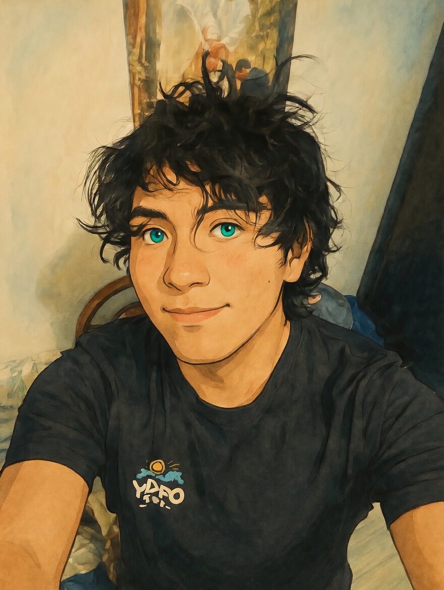

Modelos predictivos, XGBoost, regresión. Aplicación en datos reales peruanos.
Análisis multivariado, series de tiempo SARIMA y modelos de regresión múltiple.
Programación estadística y ciencia de datos con R, Python y visualización avanzada.
Modelado de datos electorales peruanos (ONPE), regresión y predicción de resultados.
Configuración de redes, sistemas operativos y mantenimiento de equipos de cómputo.
Gráficos estadísticos, dashboards y reportes para comunicar resultados de análisis.